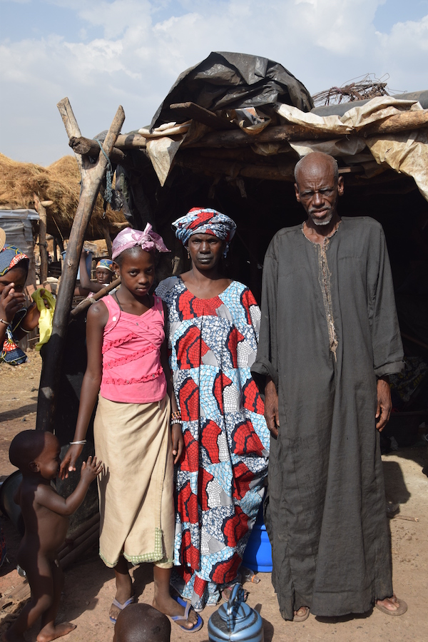
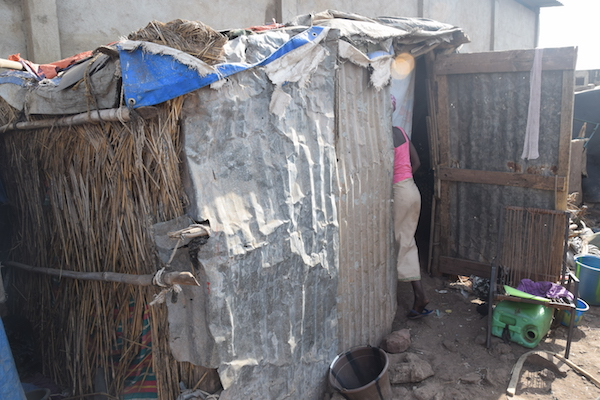
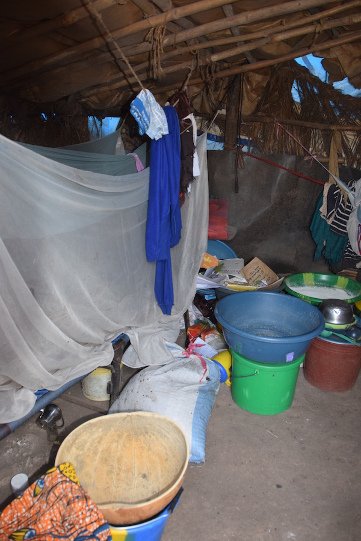

Született: 2003
9. osztály
Youmourou 14 éves, kilencedikes kislány. Családja a peul törzsbe tartozik, édesapja pásztor. A kislányt a nagyszülőknek adták, velük él a telepen. A telep az állatpiac és a vágóhíd között helyezkedik el. A karámba zárt több ezer állat és milliárdnyi légy között egy ágakból, szalmából, nejlonokból összetákolt kunyhóban. Hét kistestvére van, akik a szülőkkel élnek vidéken. Rajta kívül senki nem jár iskolába. Sokszor nem jut étel az asztalra. A fizika, kémia, biológia a kedvence. Még nem tudja, mi szeretne lenni.
  Bővebb információért írjon az info@kozelafrikahoz.hu email címre.